Science Olympiad Division C 2026 — Climate Change Theme
4 Sections: Physics (25%) | Image Interpretation (35%) | Climate Processes (20%) | Energy Balance (20%)
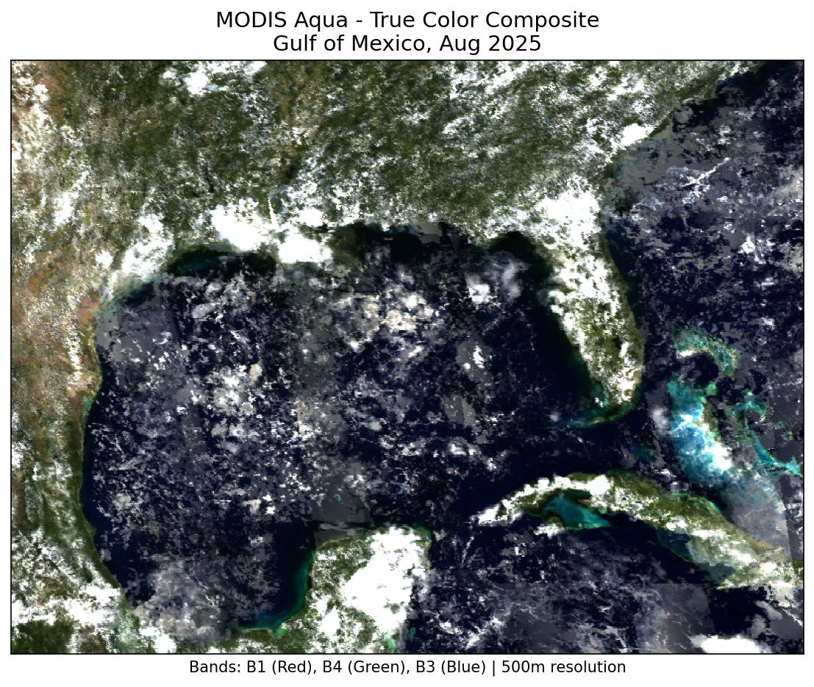
Q1.Image Interp What satellite and sensor produced this image? Identify the specific bands used and explain why these bands create a "true color" composite.
Q2.Image Interp What is the spatial resolution of this image? How does this compare to Landsat or Sentinel-2, and what trade-off does MODIS make?
Q3.Image Interp Identify the major geographic features visible in this image. What causes the bright white patches, and what causes the turquoise/cyan coloring visible near some coastlines?
Q4.Physics Why is the Aqua satellite particularly well-suited for observing the Gulf of Mexico in this image? What orbit does Aqua use, and what time of day does it cross the equator?
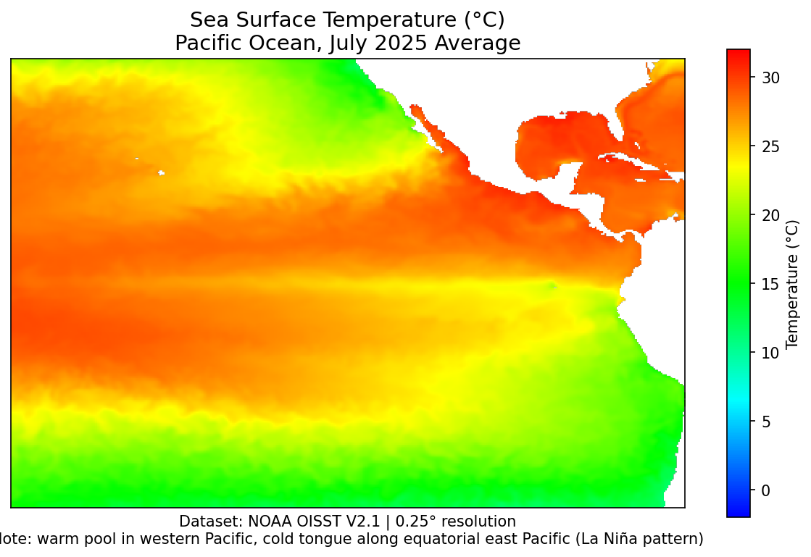
Q5.Image Interp Describe the overall SST pattern shown in this image. Where are the warmest and coolest waters, and what values do they reach?
Q6.Climate The annotation mentions a "La Niña pattern." What specific features in this SST map indicate La Niña conditions rather than El Niño?
Q7.Image Interp What dataset produced this image, and what is its spatial resolution? Why is 0.25° resolution appropriate for SST mapping but not for, say, urban land-use mapping?
Q8.Physics SST is measured by satellites using thermal infrared radiation emitted by the ocean surface. Using Wien's Displacement Law, estimate the peak emission wavelength for ocean water at 25°C. What part of the EM spectrum is this?
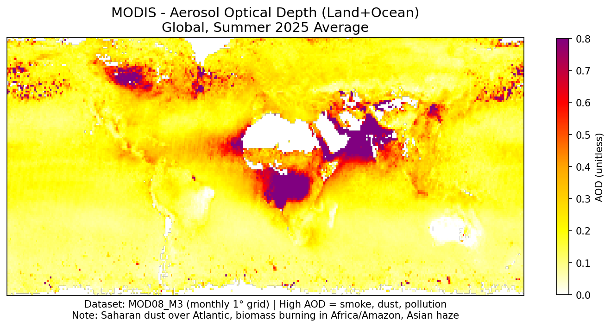
Q9.Image Interp What does Aerosol Optical Depth (AOD) measure? What AOD values appear in the color bar, and what do higher values indicate about atmospheric conditions?
Q10.Image Interp Identify the three major high-AOD regions visible on this map. For each, explain the primary aerosol source.
Q11.Climate How do aerosols affect Earth's energy balance? Distinguish between the direct and indirect effects of aerosols on climate.
Q12.Physics This dataset (MOD08_M3) uses a 1° grid. Convert 1° to approximate kilometers at the equator. Why are there white/blank areas over some land regions (e.g., bright deserts)?
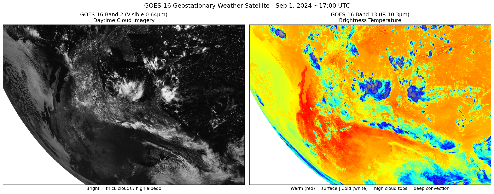
Q13.Image Interp This image shows two views from GOES-16. What band and wavelength does each panel use? Explain what physical property each band measures.
Q14.Physics GOES-16 orbits at geostationary altitude. What altitude is this, what is its orbital period, and why is geostationary orbit essential for weather monitoring?
Q15.Image Interp In the IR panel (right), identify areas of deep convection. How can you tell these clouds are tall, and approximately what temperature do their tops reach?
Q16.Image Interp Why does the left (visible) panel show a curved terminator with darkness on the left side, while the right (IR) panel shows the full disk illuminated?
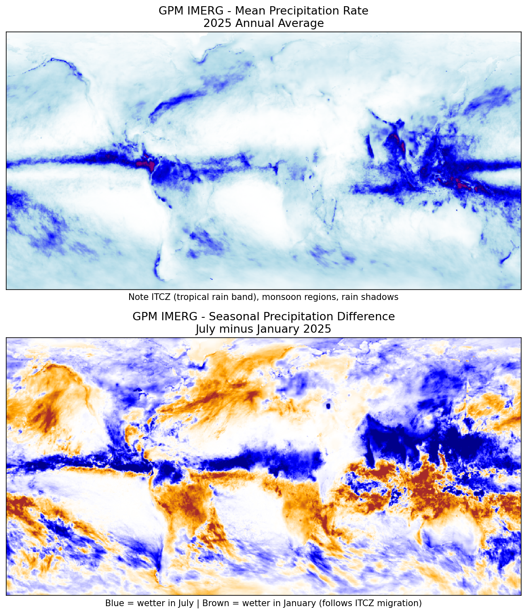
Q17.Image Interp Describe the prominent band of heavy precipitation visible in the top panel (annual mean). What is this feature called, and what atmospheric mechanism creates it?
Q18.Climate The bottom panel shows July minus January precipitation. Explain the blue and brown patterns in terms of the seasonal migration of the ITCZ.
Q19.Physics GPM (Global Precipitation Measurement) uses both radar and passive microwave sensors. Why are microwave frequencies used to detect precipitation, and what advantage does radar have over passive microwave?
Q20.Image Interp Identify two dry regions visible in the annual mean (top panel) and explain why each receives minimal precipitation.
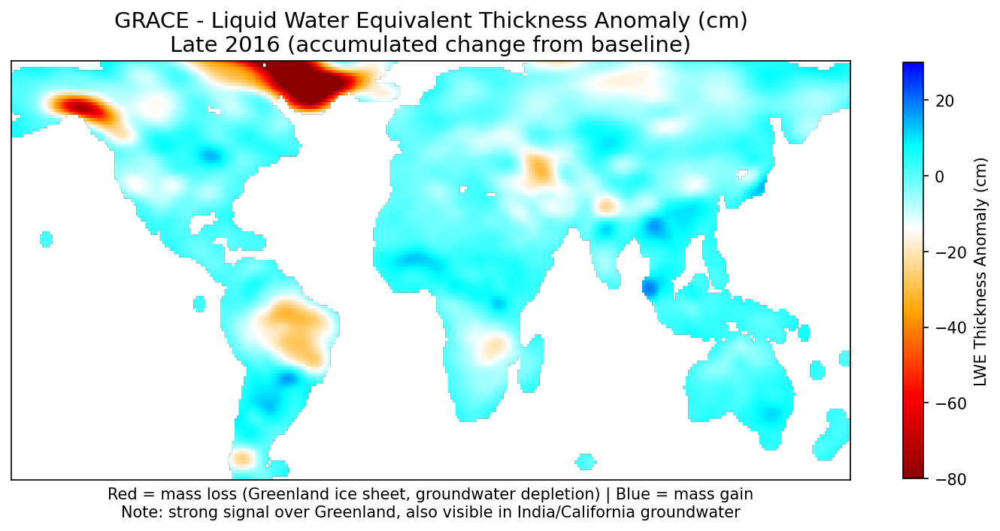
Q21.Image Interp What does this map show, and what do the red and blue colors represent? Identify the most prominent red feature and explain its significance.
Q22.Physics GRACE measures mass changes using gravity. Explain how two satellites flying in formation can detect changes in water mass on Earth's surface. What physical principle underlies this measurement?
Q23.Climate How does the Greenland mass loss shown in this image relate to sea level rise? If Greenland has lost ice equivalent to −80 cm of LWE over its area, estimate the contribution to global sea level.
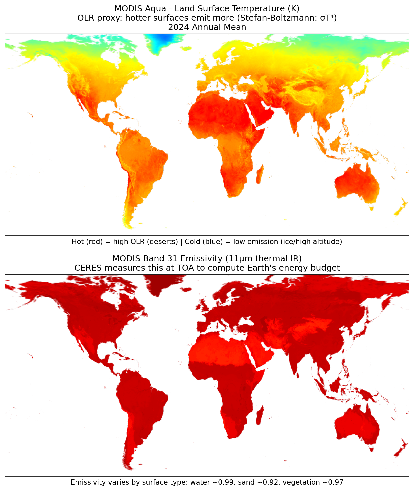
Q24.Image Interp The top panel shows land surface temperature (LST) as an OLR proxy. Where are the hottest and coldest regions? What temperature range does the color scale span?
Q25.Energy Balance Using the Stefan-Boltzmann law, calculate the OLR emitted by a desert surface at 320 K and a polar surface at 240 K. By what factor does the desert emit more?
Q26.Image Interp The bottom panel shows MODIS Band 31 emissivity. What emissivity values do water, sand, and vegetation have? Why does emissivity matter for accurate temperature retrieval?
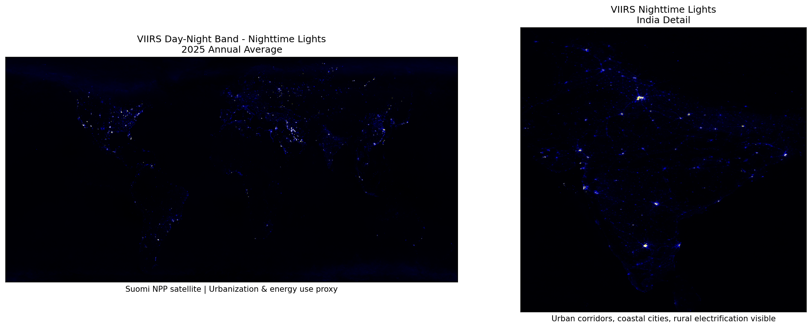
Q27.Image Interp What satellite and sensor produced this nighttime lights data? What does the "Day-Night Band" (DNB) detect, and why is it uniquely suited for this measurement?
Q28.Image Interp In the global view (left panel), identify three major bright clusters and explain what they represent. Why are some continental areas nearly completely dark?
Q29.Climate How can nighttime lights data be used as a proxy for studying climate change impacts? Give two specific examples.
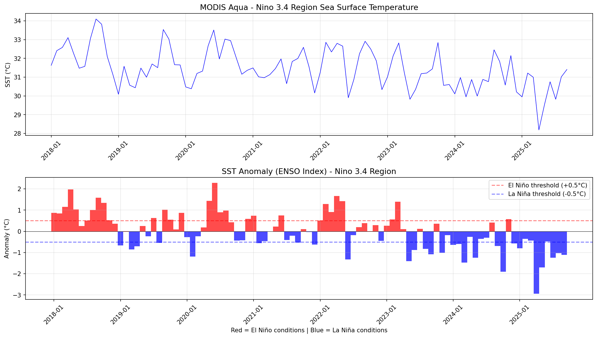
Q30.Climate The bottom panel shows SST anomalies with El Niño and La Niña thresholds marked. What are these threshold values? Identify the strongest El Niño and La Niña events visible in the 2018–2025 record.
Q31.Climate The top panel shows raw SST values oscillating between ~28°C and ~34°C. Why does the raw SST show a regular seasonal cycle even though ENSO is an interannual phenomenon?
Q32.Climate Describe the global climate impacts you would expect during the strong El Niño event visible in 2023–2024. How does El Niño affect precipitation patterns, tropical cyclones, and global mean temperature?
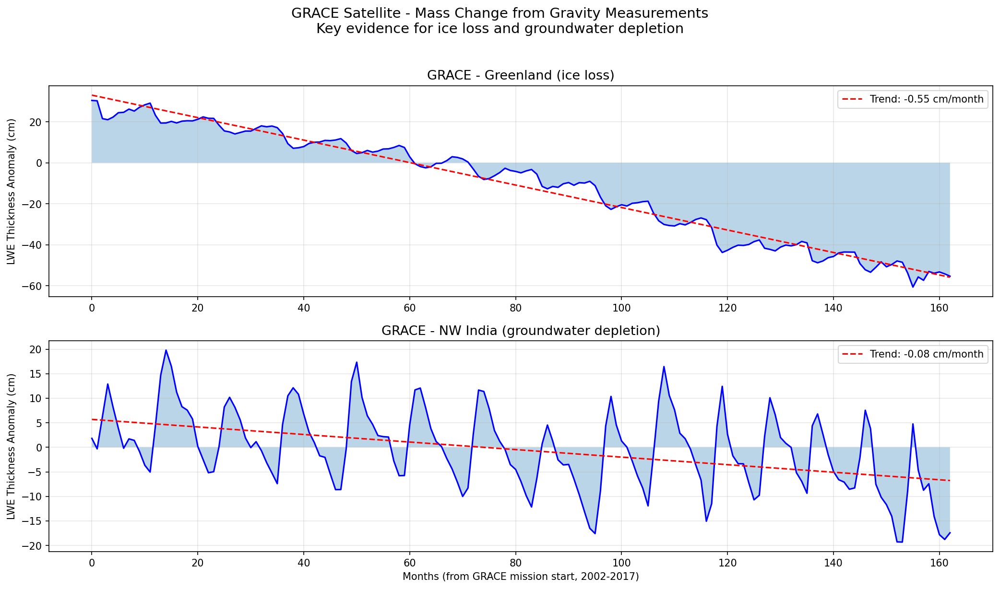
Q33.Climate Compare the trend lines for Greenland (top) and NW India (bottom). What are the rates of mass loss, and what causes each?
Q34.Image Interp The Greenland time series shows seasonal oscillations superimposed on the downward trend. What causes these oscillations, and why are they smaller than the oscillations in NW India?
Q35.Climate At the rate of −0.55 cm/month, how much LWE has Greenland lost per year? If this mass is converted entirely to sea level rise, explain why GRACE data is considered critical evidence for climate change.
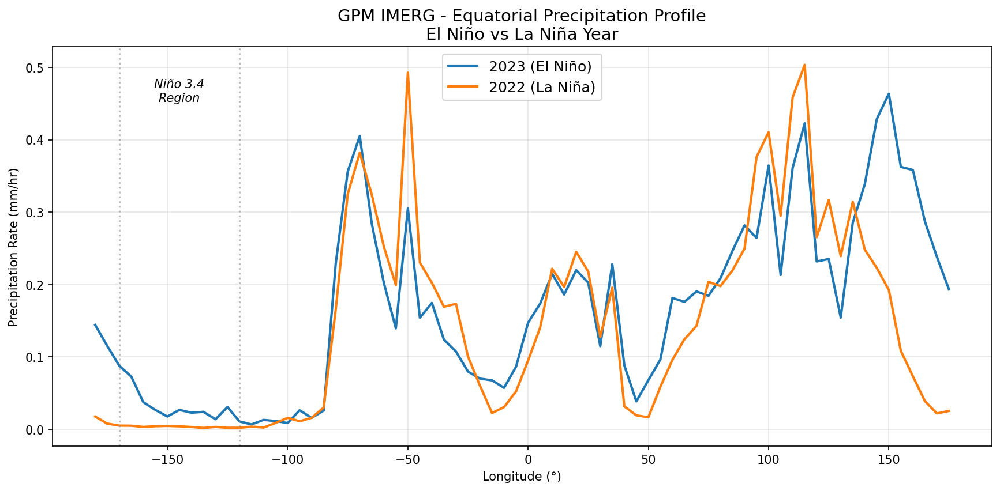
Q36.Climate Compare the 2023 El Niño (blue) and 2022 La Niña (orange) precipitation profiles. Where does the El Niño year show more precipitation, and where does La Niña show more?
Q37.Climate Explain the Walker Circulation and how it connects SST anomalies in the Niño 3.4 region to the precipitation shifts visible in this graph.
Q38.Image Interp Both profiles show a precipitation peak over central Africa / the Amazon (~−60° to 30°). Why do these continental peaks appear similar in both El Niño and La Niña years?
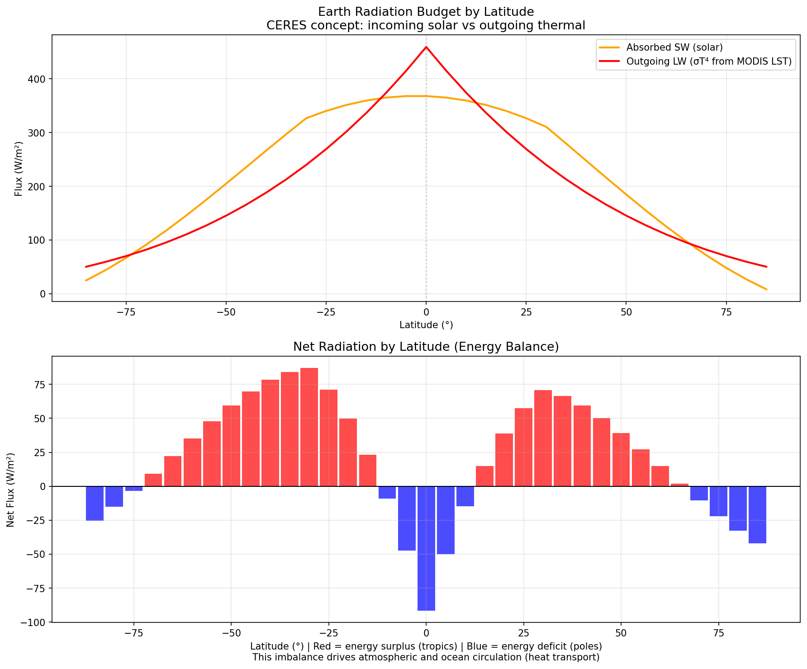
Q39.Energy Balance In the top panel, where do the absorbed shortwave (orange) and outgoing longwave (red) curves cross? What is the physical significance of these crossover points?
Q40.Energy Balance The bottom panel shows net radiation (absorbed SW minus outgoing LW). Why do the red bars (surplus) peak in the subtropics around −30° to −20° rather than exactly at the equator?
Q41.Energy Balance What satellite instrument directly measures Earth's radiation budget at the top of atmosphere? How does it differ from the MODIS-derived estimate shown here?
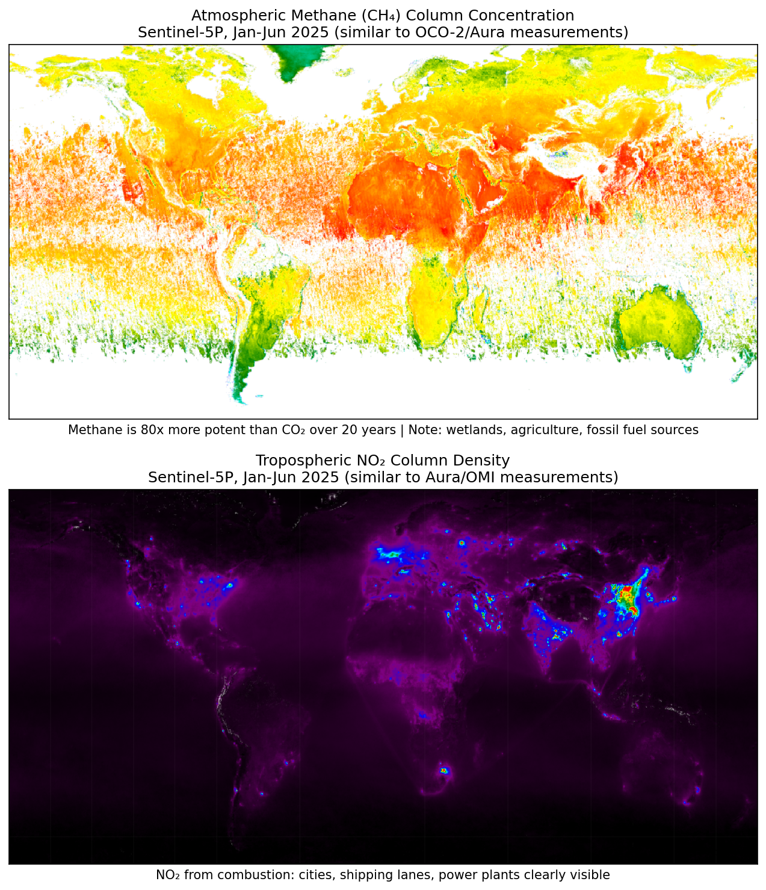
Q42.Climate The top panel shows atmospheric methane (CH4) column concentrations ranging from ~1750 to 1950 ppb. Where are the highest concentrations, and what are the primary sources of methane?
Q43.Image Interp The bottom panel shows tropospheric NO2. Identify the brightest hotspots and explain why NO2 patterns differ dramatically from CH4 patterns.
Q44.Physics Both measurements come from Sentinel-5P. What technique does this satellite use to measure trace gas concentrations, and what part of the EM spectrum does it observe?
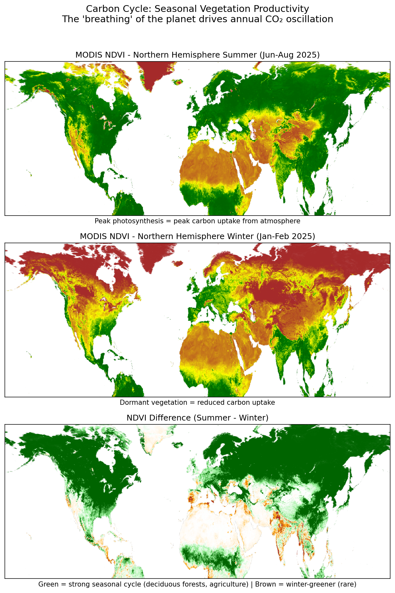
Q45.Image Interp What is NDVI, how is it calculated, and why does it indicate vegetation health? What NDVI values correspond to bare soil, sparse vegetation, and dense forest?
Q46.Climate The title states this seasonal vegetation cycle drives the annual CO2 oscillation — the "breathing of the planet." Explain this connection.
Q47.Image Interp In the difference map (bottom panel), why do tropical forests (Amazon, Congo) show minimal green despite being the densest vegetation on Earth?
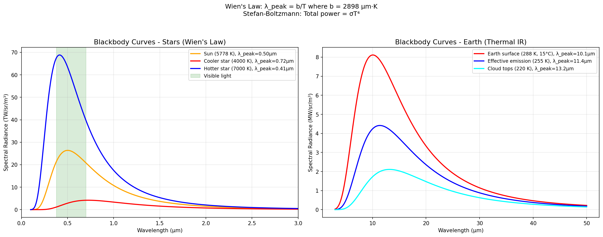
Q48.Physics Using Wien's Displacement Law (λpeak = b/T, b = 2898 μm·K), verify the peak wavelengths shown for the Sun (5778 K) and Earth's surface (288 K). Show your calculations.
Q49.Physics Compare the y-axis units and scales between the two panels. By approximately what factor does the Sun's peak spectral radiance exceed Earth's? What law explains this difference?
Q50.Physics On the right panel, three Earth-temperature curves are shown: 288 K, 255 K, and 220 K. What physical scenario does each represent, and why are all three relevant to remote sensing of climate?
Q51.Physics Why is the visible light band (green shading) positioned where it is relative to the Sun's blackbody curve? What evolutionary/physical argument explains this?
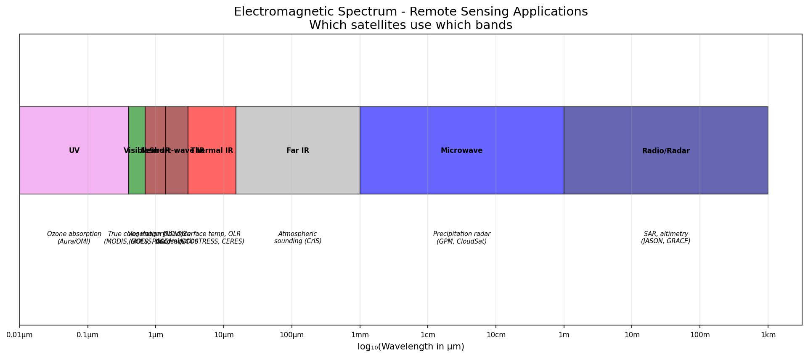
Q52.Physics List the EM spectrum bands shown in this diagram from shortest to longest wavelength. For each band, name one satellite sensor and its primary application.
Q53.Physics Why is the x-axis displayed on a logarithmic scale? What does this reveal about the relative "width" of each band?
Q54.Physics Why are microwave and radar sensors (GPM, CloudSat, JASON) essential complements to visible/IR sensors? What fundamental limitation of visible and thermal IR do they overcome?
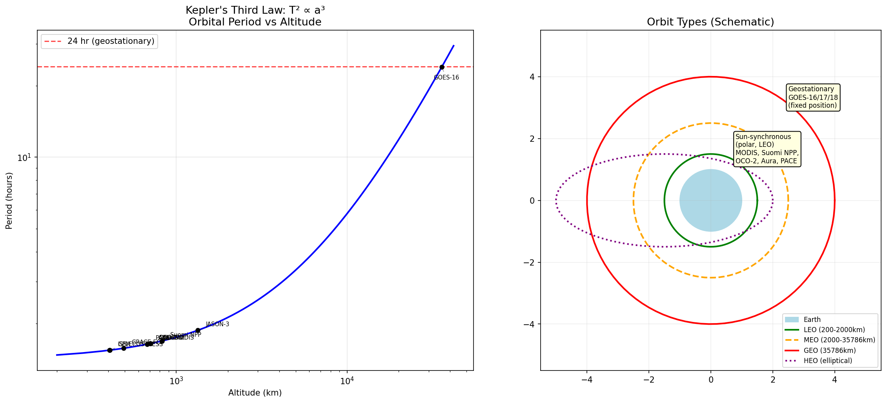
Q55.Physics Kepler's Third Law states T² ∝ a³. Using the left panel, verify this relationship: if a LEO satellite at ~700 km altitude has a period of ~1.6 hours, predict the period at geostationary altitude (35,786 km).
Q56.Physics The right panel shows four orbit types. Explain the difference between LEO sun-synchronous, MEO, GEO, and HEO orbits, and name a satellite in each category.
Q57.Physics Most Earth observation satellites (MODIS, Suomi NPP, OCO-2, Aura, PACE) are clustered in LEO at 600–800 km. Why is this altitude range preferred? What are the trade-offs of going lower or higher?
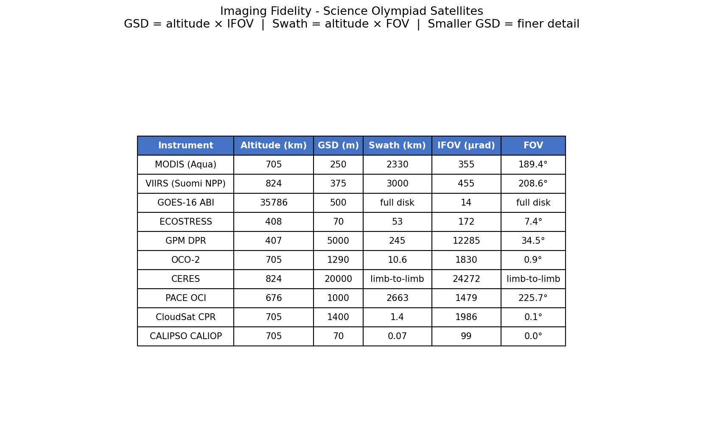
Q58.Physics Define GSD, IFOV, FOV, and swath width. Using the formulas at the top of the image, verify the GSD for MODIS (Aqua): altitude = 705 km, IFOV = 355 μrad.
Q59.Physics GOES-16 ABI has a GSD of 500 m despite being at 35,786 km altitude. ECOSTRESS achieves 70 m GSD from only 408 km. Explain why GOES-16 can achieve reasonable resolution from such extreme altitude, and why ECOSTRESS has such a narrow swath (53 km).
Q60.Physics CloudSat CPR and CALIPSO CALIOP both fly at 705 km but have very different swaths (1.4 km vs 0.07 km). Why are these instruments designed with such narrow coverage? What type of measurement do they make?
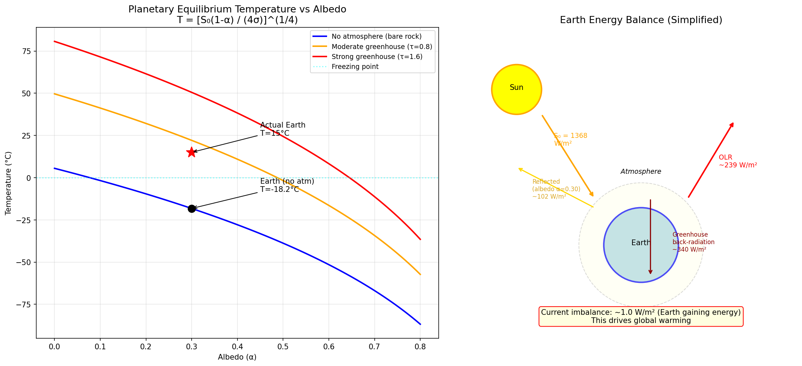
Q61.Energy Balance Using the equilibrium temperature formula T = [S0(1−α) / (4σ)]1/4, calculate Earth's equilibrium temperature with no atmosphere (α = 0.30, S0 = 1368 W/m²). Why is this different from the actual surface temperature of 15°C?
Q62.Energy Balance The left panel shows three curves for different atmospheric optical depths (τ = 0, 0.8, 1.6). What does increasing τ do to the equilibrium temperature at a given albedo? What physical process does τ represent?
Q63.Energy Balance The right panel shows Earth's current energy imbalance is ~1.0 W/m². What does this mean physically, what causes it, and what are its consequences?
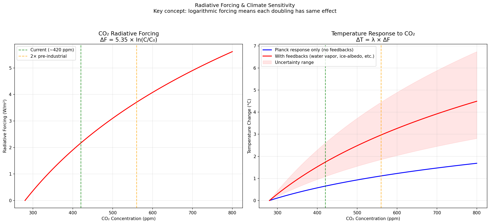
Q64.Energy Balance The left panel shows the formula ΔF = 5.35 × ln(C/C0). Calculate the radiative forcing at the current CO2 level (~420 ppm) relative to pre-industrial (~280 ppm). Then calculate the forcing at 2× pre-industrial (560 ppm).
Q65.Energy Balance The right panel shows temperature response with and without feedbacks. At 2× CO2 (560 ppm), approximately what temperature change does the Planck response give, and what does the feedback-inclusive response give? What feedbacks amplify the warming?
Q66.Energy Balance Why is the radiative forcing relationship logarithmic rather than linear? What does this mean for policy discussions about emissions reduction targets?
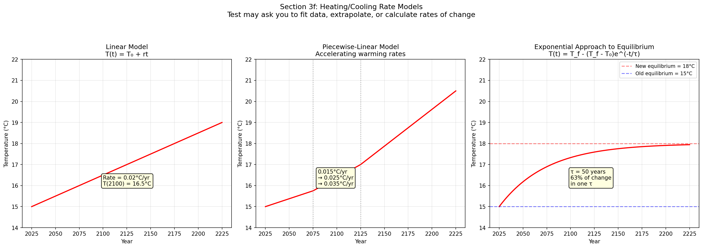
Q67.Energy Balance Using the linear model in the left panel, the initial temperature is 15°C in 2000 and the rate is 0.02°C/yr. What is the projected temperature in 2100? In 2150? Write the general equation.
Q68.Energy Balance The piecewise-linear model (center panel) shows three segments with rates of 0.015°C/yr, 0.025°C/yr, and 0.035°C/yr. Why might warming rates accelerate over time? Estimate the total temperature increase from 2000 to 2200 if each segment spans roughly 67 years.
Q69.Physics The right panel shows an exponential approach to equilibrium with the equation T(t) = Tf − (Tf − T0)e−t/τ. Given Tf = 18°C, T0 = 15°C, and τ = 50 years: (a) What fraction of the total temperature change has occurred after one time constant? (b) After three time constants? (c) What is T at t = 50 years?
Q70.Climate Processes Compare all three models. Which is most physically realistic for Earth's climate system responding to a one-time doubling of CO2? Which best describes a scenario of continually increasing emissions? Explain your reasoning.